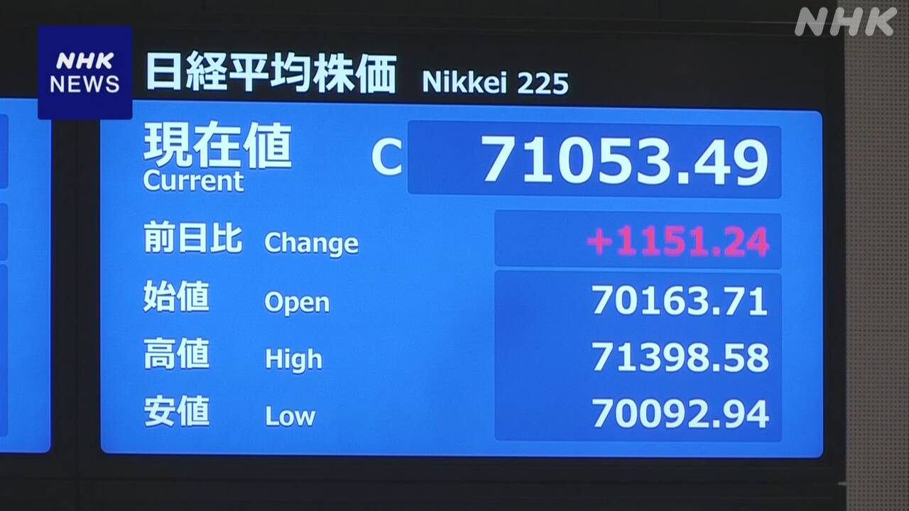
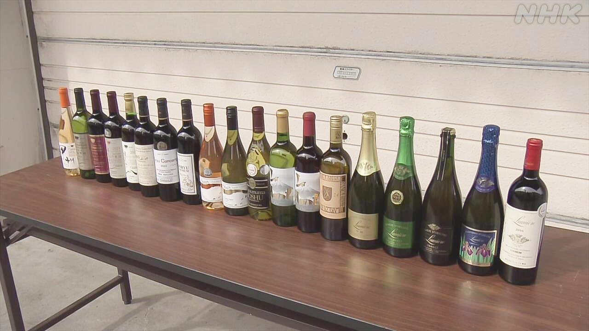

最新ニュース
1️⃣ アメリカとイランの大統領 戦いを終わりにする書類にサイン
アメリカとイランの戦いが終わりそうです。
アメリカのトランプ大統領は17日、イランとの戦いを終わりにするための書類にサインしました。
イランのメディアも、ペゼシュキアン大統領が18日、書類にサインしたと伝えました。
ホルムズ海峡では、原油を積んだ船が通ることができるようになります。書類には、イランが60日間、ホルムズ海峡を通る船から、お金を取らないように努力すると書いてあります。
60日を過ぎたら、イランがお金を取ることになるかもしれません。アメリカは、無料で通ることができるように話を続けると言っています。
イランの核の問題については、このあとも話し合いが続きます。
2️⃣ 株の価格 7万1000円以上 今まででいちばん高くなった

東京株式市場で18日、日経平均株価が7万1000円以上になりました。
日経平均株価は、代表的な株の平均の値段です。今まででいちばん高くなりました。
アメリカとイランが、戦いを終わりにするための書類にサインしたことなどが伝わったためです。
AIや半導体、建設などたくさんの会社の株を買おうという注文が増えました。
3️⃣ 山梨県からブラジルにたくさんワインを輸出する

山梨県のワインを、ブラジルに初めてたくさん輸出することになりました。
今までイギリスやアメリカなどには、たくさん輸出していましたが、ブラジルには去年300本だけでした。
今年は、山梨県の5つの会社がつくった6000本ぐらいを輸出します。いちばん多いのは「甲州」というぶどうからつくったワインです。
17日は、笛吹市で、ワインを入れた箱をトラックに積みました。ワインは、船で8月にブラジルに着きます。日本料理のレストランや、スーパー、インターネットなどで売ることになっています。
ワインをつくる会社は、「世界にないすばらしい味です。ブラジルでたくさんの人に楽しんでほしいです」と話していました。
4️⃣ 災害にあった人たちを元気に CDをつくるため高校生が演奏
災害にあった人たちを元気にするため、高校生たちが音楽を演奏しました。
東京のNPOは、東日本大震災など災害にあった人たちを助けるために、音楽のCDを作っています。CDの売り上げを、災害にあった子どもたちに寄付しています。
新しいCDを作るために16日、岩手県盛岡市で、高校生のオーケストラが演奏しました。
演奏したのは、有名なスポーツ選手が作った「がんばれニッポン」などです。
高校生は「災害で苦しんでいる人も多いと思います。自分たちの音楽を聞いて、明るい気持ちになってほしいです」と話していました。
- 〜そうだ
- 〜ため
- 〜ことができる
- 〜ようになる
- 〜こと
- 〜になる
- 〜ように
- 〜から
- 〜ことになる
- 〜かもしれない / 〜かもしれません
- 〜すぎる
- 〜ている / 〜でいる
- 〜後 / 〜あと
- 〜について
- 〜以上
- 〜まで
- 〜など
- 〜という
- 〜だけ
- 〜や〜など
- 〜くらい / 〜ぐらい
- 〜ことになっている
- 〜らしい
- 〜ため(に)
- 〜と思う
vebaev.github.io
Generated: 2026-06-18 12:54:26 UTC